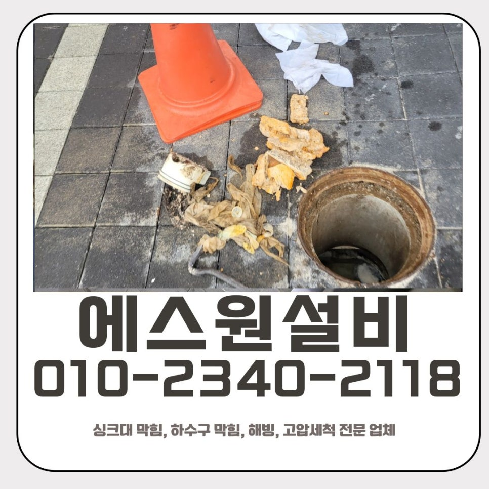
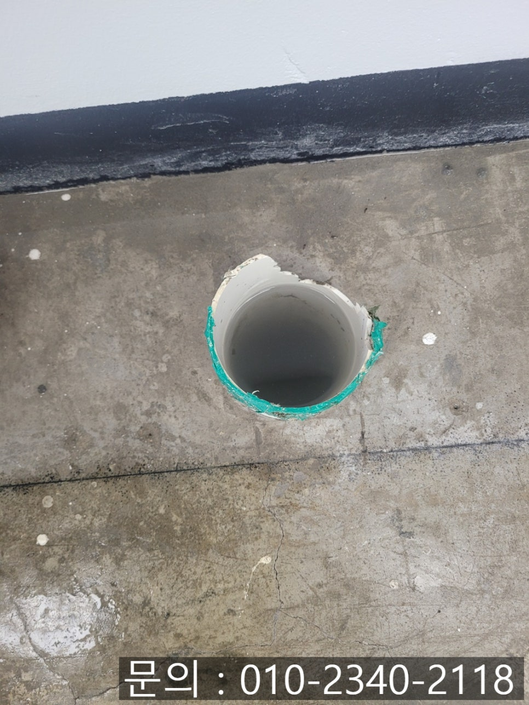
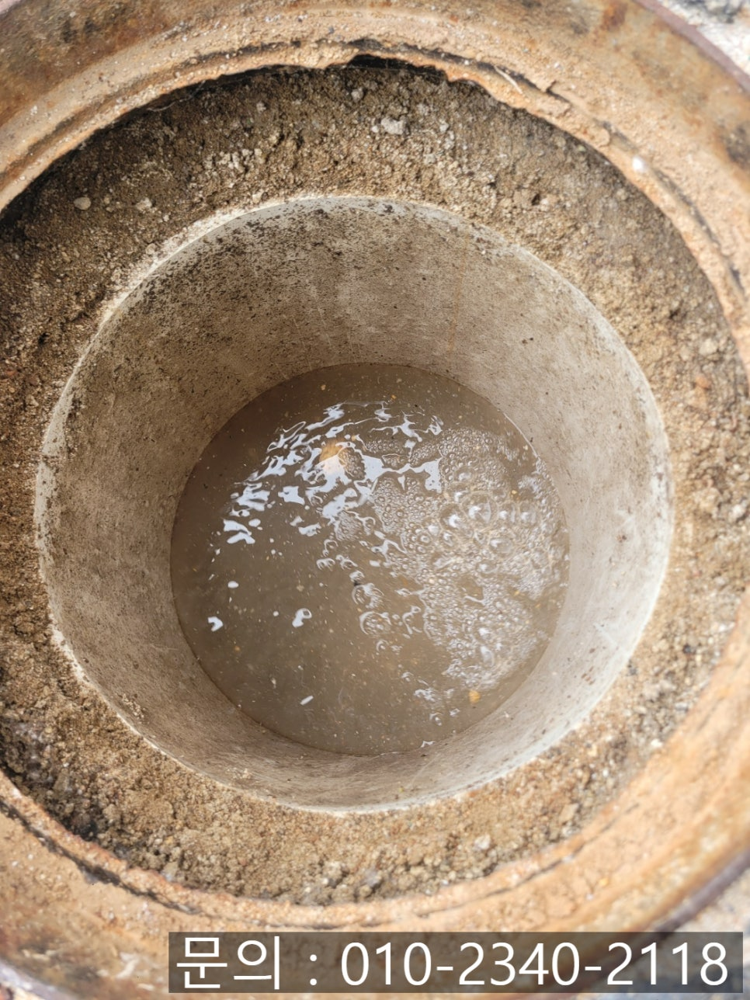
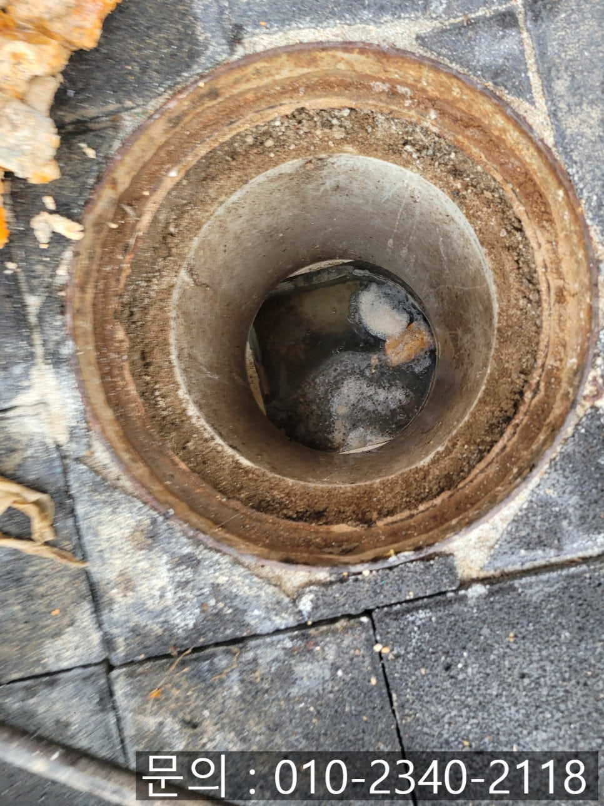
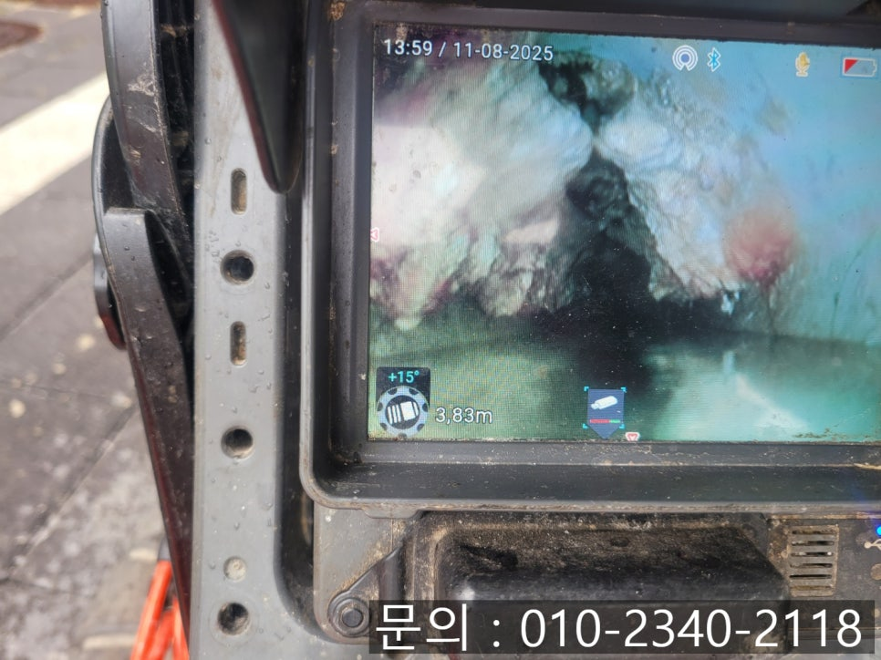
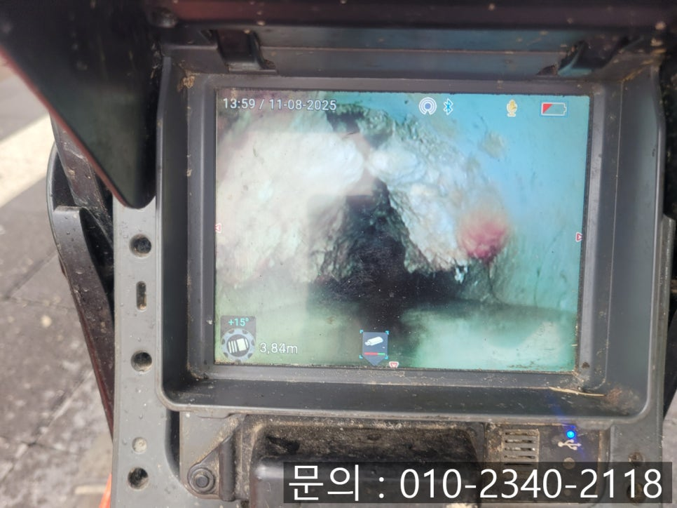
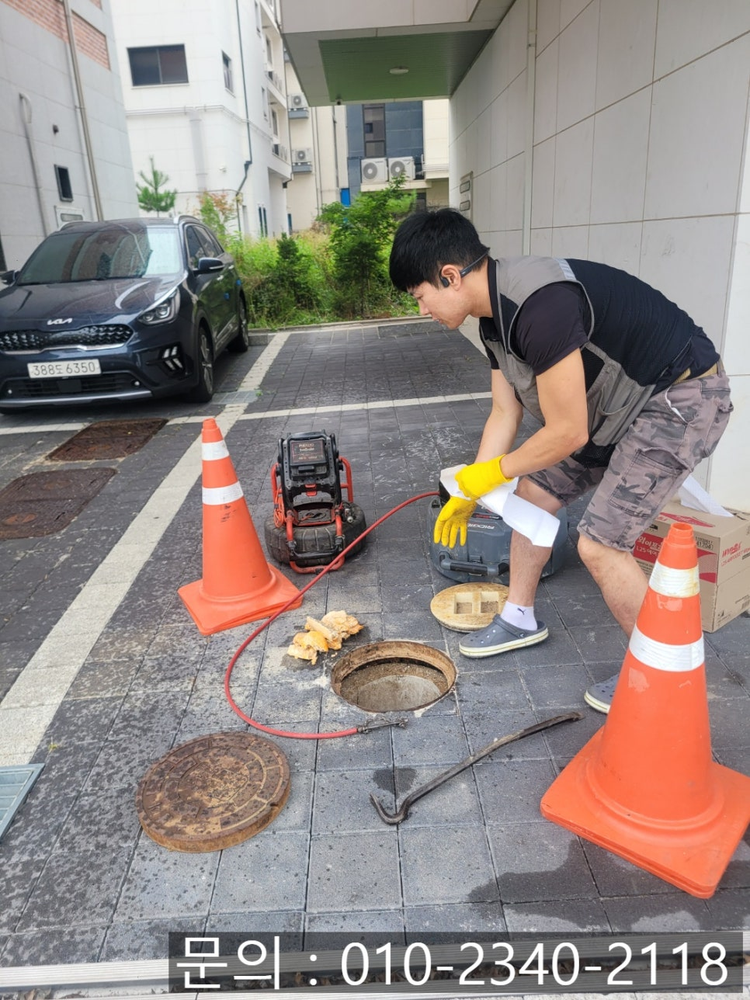

🏠 동삭동 하수구 막힘 평택 고덕동 사무실 배관 역류할 때 뚫어주는 업체
평택 하수구막힘 전문 시공 후기

📋 작업 개요
- 위치: 평택
- 서비스 유형: 하수구막힘, 배관막힘, 맨홀막힘, 누수수리, 역류해결, 뚫는업체, 배관청소, 설비공사, 악취차단
- 작업 일시: 2025. 8. 14. 10:40
- 업체명: 하수구수사대 (010-5615-2118)
🔍 문제 상황
안녕하세요.
평택 고덕동 사무실 배관 역류할 때 뚫어주는 업체 에스원 설비입니다.
동삭동 하수구 막힘은 가정집뿐만 아니라 상가, 회사 사무실, 공장, 빌라 등 다양한 건물에서 발생할 수 있는 흔한 문제입니다. 하지만 막상 이런 상황이 발생하면 불편함의 정도는 상상을 초월합니다.

🔎 원인 분석
💡 전문가 진단: 정밀 진단 장비를 사용하여 슬러지의 고착 여부를 판명하고 타격/세척 작업을 실시했습니다.
단순히 물이 내려가지 않는 불편함을 넘어, 악취가 퍼지고 위생문제가 생기면서 오랜 시간 방치할 경우 막힘으로 인한 내부 압력이 높아져 파손이나 누수로 이어질 수 있어요. 그렇게 되면 수리 비용과 공사 범위가 훨씬 넓어지기 때문에 하수구가 막혔을 땐 전문가의 도움을 받아 빠른 조치를 취하는 것이 무엇보다 중요합니다.
에스원 설비로 의뢰를 주신 곳은 사무실 하수구 역류 현장이었어요. 고객님 말씀으로는 물이 잘 내려가지 않더니 급기야 물이 역류하여 악취까지 심각해졌다고 하셨어요.
사무실은 여러 명이 함께 사용하는 공간이기도 하지만, 업무를 해야 하는 곳이기 때문에 동삭동 하수구 막힘으로 인한 불편함이 훨씬 크게 다가옵니다. 물이 역류하거나 악취가 심하게 나면 직원들이 집중하기 어려울 뿐 아니라 고객이나 방문객에게도 좋지 않은 인상을 줄 수 있지요. 특히 물 청소나 세면, 간단한 주방 사용이 제한되면 기본적인 업무 환경이 무너져 버리기 때문에 빠른 해결이 필요한 상황이었어요.
현장에 도착하여 바로 점검을 시작하였어요. 실내 하수구 상태를 확인해 보니, 물이 전혀 내려가지 않고 역류가 심각한 상태였어요. 이런 경우 내부 배관 문제가 아닌 건물 외부 메인 하수관에서 문제가 생겼을 가능성도 있어요. 건물 밖으로 나가 맨홀을 열어 하수구 상태를 확인해 보았습니다.

🔧 작업 과정
맨홀을 열자마자 눈에 들어온 것은 가득 고여 있는 오수 심각한 악취였어요. 정상적인 배수가 이루어졌다면 물이 자연스럽게 흘러가야 하지만, 어딘가가 막혀 흐름이 차단된 상태였어요.
배관 내시경 장비를 메인 하수구 내부로 진입시켜 내부를 살펴보니, 오랫동안 쌓여 굳어진 슬러지와 각종 이물질이 가득 차 있는 것을 확인할 수 있었어요.
우선 갈고리 도구를 이용하여 건져낼 수 있는 큰 이물질들을 하나하나 꺼내주었어요. 하지만 오래 굳어 단단해진 슬러지는 갈고리로 제거가 불가능하기 때문에 플렉스 샤프트 장비를 사용하여 주었어요.
샤프트 장비는 회전하는 노즐이 배관을 가득 채우고 있는 슬러지를 강하게 긁어내어 잘게 부숴주는 장비로 이렇게 갈아내주면서 청소를 해야 물길이 완전히 열리면서 물이 시원하게 배수될 수 있기 때문이에요.
동삭동 하수구 막힘이 제거 완료되고, 다시 내시경으로 배관 내부를 점검해 보니 원활하게 물이 빠지고 있었어요. 현장 주변에 작업하면서 생긴 오염물과 물기까지 꼼꼼하게 정리하였답니다.


✅ 작업 완료
물이 내려가지 않거나 역류 혹은 악취가 심해지는 이상함을 느끼면 즉시 전문가 점검을 받아 해결하시는 것을 추천드립니다. 빠른 대응이 결국 시간과 비용을 절약하는 길이랍니다. 평택 고덕동 사무실 배관 역류할 때 뚫어주는 업체 에스원 설비가 책임지고 해결해 드리겠습니다.
경기도 평택시 고덕중앙로 322 4층 129호




⚠️ 베란다 누수 및 방수 관리 방법
- ✅ 비가 많이 올 때 창틀 주변이나 아래층 천장에 얼룩이 생기는지 정기적으로 확인해 보세요.
- ✅ 우수관 주변 실리콘 마감이 들뜨거나 깨진 틈새가 있는지 손상 여부를 수시로 체크하세요.
- ✅ 베란다 바닥 타일의 줄눈(메지)이 소실되면 그 틈으로 물이 침투하여 누수가 유발됩니다.
- ✅ 누수 의심 증상 발견 시 방치하면 아래층 손실이 커지므로 즉시 전문가의 진단을 받으십시오.
💡 핵심 정리
- 확실한 장비 작업(내시경 점검 및 샤프트 스케일링)으로 원인을 뿌리 뽑습니다.
- 작업 후 1년 이내에 동일한 부위 재발 시 100% 무상 A/S 서비스를 보장합니다.
- 서울 · 경기 · 인천 전 지역에 24시간 언제든 긴급 출동할 수 있도록 항시 대기 중입니다.
❓ 자주 묻는 질문 (FAQ)
🚨 평택 하수구막힘 문제로 고민이신가요?
정확한 원인 진단과 확실한 시공으로 재발 없는 해결을 약속드립니다.
24시간 긴급 출동 | 서울 · 경기 · 인천 전지역 | 1년 내 재발 시 무상 A/S